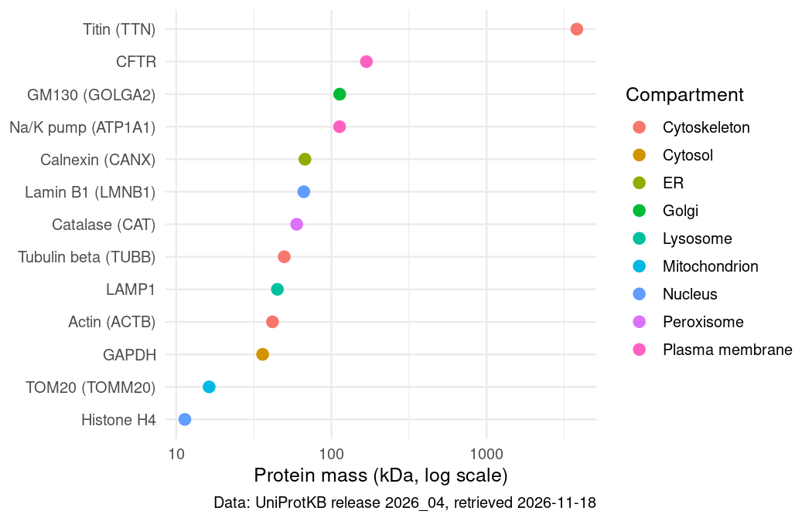

Bioinformatics day: where does a protein live?
Today
You look up where proteins live, using the same kind of evidence as in the lectures: an annotated database entry (UniProt), real immunofluorescence images (Human Protein Atlas), and a cell-line register (Cellosaurus). Then you write your first R Markdown report: it fetches protein sizes from UniProt and plots them.
Builds on: A tour of the cell (organelles, scale, HeLa), Seeing cells: microscopy (immunofluorescence) and Taking cells apart and perturbing them (marker proteins, cell lines, single-cell omics). ELO 1, 5.
Time: Part A about 1.5 h, Part B about 1.5–2 h.
Before you start
Download the report template: bioinfo-protein-atlas.Rmd. Put it in a new, empty folder (for example
cellbio-bioinfo/).Check R. In R, run:
packageVersion("rmarkdown") # an error means: install.packages("rmarkdown") packageVersion("ggplot2") # an error means: install.packages("ggplot2")Knitting also needs Pandoc. RStudio includes it. If you work from the command line, check with
rmarkdown::pandoc_available()(should beTRUE).No logins are needed for any of today’s websites.
Keep a notes file or the template open: you fill a small table during Part A.
Databases name the same thing in different ways. Learn to tell them apart today; every later bioinformatics day uses all three.
- Gene symbol (HGNC), e.g.
CANX: names the human gene; short and readable, but genes are sometimes renamed. - UniProt accession, e.g.
P27824: names the protein entry; stable, so use it to cite a protein. - Ensembl gene ID, e.g.
ENSG00000127022: names the gene in the genome sequence; stable (a version number such as.17may be added; leave it out).
Gene and protein names differ too: the Golgi marker GM130 in the lecture is the gene GOLGA2; TOM20 is TOMM20.
Part A: in the browser
Write what you find in the table at the top of your .Rmd template (section “Part A”). The answers to the tasks are further down; try first.
A1. UniProt: a protein entry
UniProt collects what is known about each protein. Its reviewed part (Swiss-Prot) is curated by experts who read the papers; the unreviewed part (TrEMBL) is mostly computed from genome sequences.
- Go to https://www.uniprot.org. Type
CANX humanin the search box (the menu next to it should say UniProtKB) and press Search. Note how many results there are. - In the filters on the left, under Status, click Reviewed (Swiss-Prot). How many are left? Most results are not calnexin at all: they are proteins whose entry mentions calnexin, and calnexin from other species.
- Open the entry with accession P27824 (entry name
CALX_HUMAN). Direct link: https://www.uniprot.org/uniprotkb/P27824/entry. - In the header, find the accession, the length (“Amino acids”), the annotation score and protein existence.
- Click Subcellular Location in the menu on the left. Read the “UniProt Annotation” part: where is calnexin, and how does it sit in the membrane (topology)?
- Each statement has an evidence tag next to it, such as “1 Publication”, “By similarity” or “Sequence analysis”. Click or hover over one: UniProt shows the evidence code (ECO number) and its source. Find one location that is backed by an experiment and one that is only inferred.
- Click Function and read the first paragraph: what does calnexin do in the ER?
A2. Human Protein Atlas: the protein in a real cell
The Human Protein Atlas (HPA) stains thousands of proteins with antibodies in cultured human cells and images them by confocal immunofluorescence: the method from the microscopy lecture.
- Go to https://www.proteinatlas.org, type
CANXin the search box and open the gene. The gene summary page shows the Ensembl ID and the UniProt accession. (Direct link: https://www.proteinatlas.org/ENSG00000127022-CANX.) - In the row of section names at the top of the gene page, click SUBCELLULAR.
- Read the summary: Main location, Reliability score and the antibody names. The reliability score (Enhanced > Supported > Approved > Uncertain) says how well the staining agrees with other evidence, for example a second antibody or the UniProt annotation.
- Look at the images. The protein of interest is green; the reference stains are the nucleus (blue), microtubules (red) and the ER (yellow). Click an image to enlarge it, and use the buttons above it to switch channels on and off. Which cell lines were used?
- Compare with the map of the animal cell from the first lecture: does calnexin look like the ER in the cartoon (a network around the nucleus, continuous with the nuclear envelope)?
A3. Organelle markers
Marker proteins identify organelles in fractionation and microscopy. Repeat A1 (accession and UniProt location only) and A2 (HPA main location and reliability) for:
- TOMM20 (TOM20), GOLGA2 (GM130), LMNB1 (lamin B1), CAT (catalase), LAMP1.
Tip: in UniProt, search TOMM20 human and filter Reviewed, or use the gene search gene:TOMM20 AND organism_id:9606. In HPA, the search box takes the gene symbol.
Look at each image for a moment. Mitochondria, Golgi and nuclear envelope have shapes you know from the HeLa cell explorer. Not every protein has every kind of data: if a section is missing or empty, write that down. It is a result too.
A4. HPA single-cell: which cells make the protein?
The Subcellular section shows where in a cell a protein is. The Single cell section shows which cell types make its mRNA, measured by single-cell RNA sequencing of many human tissues.
- In HPA, search
INS(insulin), open the gene and click SINGLE CELL in the section row. - Read the single cell type specificity and the bar chart of all cell types (nCPM, normalised counts per million). Which cell type stands out, and by how much?
- Do the same for CANX. What is the difference in the pattern, and why does it make sense for an ER chaperone?
A5. Cellosaurus: is the culture what you think it is?
Every cell line has an entry in Cellosaurus, with a stable accession (CVCL_…) that papers use to say exactly which cells they used.
- Open HeLa: https://www.cellosaurus.org/CVCL_0030.
- Find: species of origin, disease, sex of cell, age at sampling, and the Virology or Transformant comment (which virus?).
- In Comments, find the “Miscellaneous” line about contamination. Then scroll to the STR profile: this DNA fingerprint is how a lab checks its HeLa really is HeLa (lecture: is the culture what you think it is?).
- Open HEp-2: https://www.cellosaurus.org/CVCL_1906. Read the Problematic cell line comment. What was HEp-2 thought to be, and what is it?
R Markdown in five minutes
An R Markdown file (.Rmd) is a plain text file that mixes text and R code. Knitting runs all the code from top to bottom and writes one HTML file with your text, code, tables and plots. Instead of copying numbers by hand into a spreadsheet and a document, the report is the analysis: anyone can re-run it and get the same result, and if the data change, the numbers in your text change with them. Every later bioinformatics day uses this format.
The parts of the template:
- YAML header between the two
---lines at the top: title, author, date and output format. Put your name inauthor:. - Text in Markdown:
# Heading,**bold**,*italic*, lists with-, tables with|. - Code chunks start with
```{r chunk-name}and end with```. Options go after the name, for examplefig.width = 7. - Inline R in text: a backtick,
r, a space, an R expression and a backtick. Writing`r 2 + 2`in your text gives 4 in the HTML.
How to knit:
In RStudio: open the file and click Knit (or Ctrl/Cmd+Shift+K).
From the command line, in the folder with the file:
Rscript -e 'rmarkdown::render("bioinfo-protein-atlas.Rmd")'Then open
bioinfo-protein-atlas.htmlin a browser.
Objects you made in the R console do not exist while knitting. If the report needs an object, a chunk in the report must create it. “object ‘x’ not found” in the HTML almost always means this.
Part B: in R Markdown
B1. Knit the template untouched
Open bioinfo-protein-atlas.Rmd and knit it before you change anything. You get an HTML report with a hidden setup chunk, the Part A table, a table of 13 proteins and red Error messages where your code is still missing (“object ‘proteins’ not found”). That is expected: the setup chunk sets error = TRUE, so the report knits even when a chunk fails. Look at the HTML and find each part of the .Rmd in it. Put your name in the YAML header and knit again.
B2. Fetch the data from UniProt (your chunk 1)
UniProt has a REST API: an address that returns data instead of a web page. This address returns the length and mass of two proteins as a tab-separated table (TSV). Open it in your browser to see what R will get. The address has three pieces:
base: https://rest.uniprot.org/uniprotkb/accessions?accessions=
accessions: P27824,Q15388,... (separated by commas, no spaces)
fields: &fields=accession,gene_primary,protein_name,length,mass&format=tsvIn the chunk uniprot-fetch:
- Make the comma-separated accessions from the
markerstable withpaste(markers$accession, collapse = ","). - Glue the three pieces together with
paste0()intouniprot_url. - Read it:
proteins <- read.delim(uniprot_url).read.delim()reads a tab-separated table from a file or a web address. - Print
head(proteins)and knit. The next (given) chunk saves a dated copy in adata/folder, records the UniProt release and addsmass_kda.
Look at the column names R made: Gene.Names..primary. R replaces spaces and brackets in column names with dots. The mass is in daltons (Da).
B3. Largest and smallest (your chunk 2)
In the chunk largest-smallest, find the heaviest and the lightest protein: which.max(proteins$Mass) gives the row number of the largest value, so proteins[which.max(proteins$Mass), ] is that row. Store the two rows as largest and smallest, and ratio <- largest$Mass / smallest$Mass.
B4. Plot on a log scale (your chunk 3)
In the chunk mass-plot, make a dot plot with ggplot2:
aes(x = mass_kda, y = label, colour = compartment)andgeom_point();scale_x_log10()for a logarithmic x axis;labs()with an x-axis label with its unit and acaptionnaming the source, for examplepaste("Data: UniProtKB release", uniprot_release).
Try the plot without scale_x_log10() first and look at it. Then add it. Optional: y = reorder(label, mass_kda) sorts the rows by mass.
B5. Write the result
Under “What the plot shows”, write two or three sentences: which protein is largest and smallest, how many times heavier, and why the log axis was needed. Put at least one number in with inline R, for example the ratio as `r round(ratio)`. Knit, read your HTML, and fill in the date you used the websites in the “Data” section.
In the setup chunk, change use_snapshot <- FALSE to use_snapshot <- TRUE and knit again. Your chunk 1 is then skipped and the report reads the course’s saved copy of the same query (made on 2026-11-18, UniProt release 2026_04). It downloads the copy from this site; you can also save the snapshot into a data/ folder next to your .Rmd.
Tasks
T1. [ELO 1] Identifiers and evidence. Give the gene symbol, UniProt accession and Ensembl gene ID of human calnexin. Where in the cell is it according to UniProt, how does it sit in the membrane, and what kind of evidence supports the location?
Gene CANX, UniProt P27824 (entry name CALX_HUMAN, reviewed, 592 amino acids), Ensembl ENSG00000127022. Location: endoplasmic reticulum membrane, single-pass type I membrane protein: one transmembrane helix, with the large N-terminal part (after the signal peptide) in the ER lumen and a short C-terminal tail in the cytosol. The ER location carries the tag “1 Publication” (ECO:0000269, experimental evidence from a paper); the topology is “Sequence analysis” (ECO:0000255, predicted from the sequence). UniProt also lists mitochondrion membrane “By similarity” (inferred from the mouse protein) and melanosome membrane. So one entry mixes measured and inferred statements, and the evidence tag tells you which is which. The search CANX human gave about 430 results, about 110 of them reviewed; calnexin is only one of them (exact numbers change with every release).
T2. [ELO 1, 5] Markers. Which organelle does each of TOMM20, GOLGA2, LMNB1 and LAMP1 mark? Give the HPA main location and reliability score where there is one, and say how the images fit the organelle’s shape.
- CANX (for comparison): UniProt ER membrane; HPA Endoplasmic reticulum, Enhanced. A fine network through the cytoplasm, densest around the nucleus, overlapping the yellow ER stain (cell lines A-431, U-251MG, U2OS).
- TOMM20 marks mitochondria: UniProt mitochondrion outer membrane; HPA Mitochondria, Enhanced. Short threads and tubes throughout the cytoplasm.
- GOLGA2 (GM130) marks the Golgi: UniProt cis-Golgi network membrane (peripheral, on the cytoplasmic side); HPA Golgi apparatus, Enhanced. One compact bright patch next to the nucleus.
- LMNB1 (lamin B1) marks the nuclear envelope: UniProt nucleus lamina; HPA Nuclear membrane, Supported. A sharp ring at the edge of the nucleus.
- LAMP1 marks lysosomes: UniProt lysosome membrane (also late endosomes and plasma membrane); HPA: no immunofluorescence data.
LAMP1 is a standard lysosome marker in the lab, but HPA had no subcellular (immunofluorescence) data for it on the check date. Use the UniProt annotation instead, or look at a related lysosomal protein in HPA. If HPA has added LAMP1 since, expect “Lysosomes” or “Vesicles”. The lesson: no single database covers every protein, and an empty section is not evidence that a protein is absent.
T3. [ELO 1, 5] [VG] When databases disagree. Catalase is the classic peroxisome marker (cell-methods lecture). What do UniProt and HPA say about where it is? Suggest why they might differ, and how you would decide.
UniProt: peroxisome matrix, from experiments (two publications). HPA: main location “Vesicles”, reliability Supported. Peroxisomes are 0.1–1 µm, close to the resolution limit of a light microscope (about 0.2 µm), so in an immunofluorescence image they appear as many small round dots, which look the same as small vesicles or endosomes. HPA’s category “Vesicles” is a deliberately coarse class for such dots. The image alone cannot tell which kind of dot it is. To decide: co-stain with a known peroxisome marker (for example the membrane protein ABCD3, which HPA annotates “Peroxisomes”, reliability Enhanced) and check that the dots overlap; or fractionate cells and show catalase in the peroxisome fraction (the density gradient from the cell-methods lecture), as the original biochemistry did. If HPA now says “Peroxisomes”, the annotation has been improved since the check date: the reasoning is the same.
T4. [ELO 1] Single cells. What does the HPA single-cell section show for INS, and how does it differ from CANX?
INS is cell type enriched in pancreatic islet cells (the endocrine cells of the pancreas; insulin comes from the β cells among them), at tens of thousands of nCPM (85 601 on the check date), and is essentially absent in every other cell type. It is an extreme example of a cell-type-specific gene. CANX is “detected in many” cell types with low cell type specificity: every cell that makes membrane or secreted proteins needs the ER folding machinery, so an ER chaperone is a typical housekeeping protein. That is also why such proteins make good organelle markers in any cell line.
T5. [ELO 1] Cell lines. HeLa in Cellosaurus: species, disease, virus. What does Cellosaurus say about HeLa and contamination, and what is HEp-2?
HeLa (CVCL_0030): Homo sapiens, female, 30 years 6 months at sampling; disease human papillomavirus-related endocervical adenocarcinoma (a cervical cancer); transformed by HPV18, whose DNA is integrated at several sites in the genome (one near the MYC gene at 8q24). Comment: “HeLa is the most frequent contributor to cell lines contamination”. HEp-2 (CVCL_1906) was thought to come from a laryngeal carcinoma of a 56-year-old man, but is flagged as a problematic, contaminated line: it is a HeLa derivative. Results “in laryngeal cancer cells” from HEp-2 are therefore about cervical cancer cells. The STR profile in Cellosaurus is the reference a lab compares its own cells with.
T6. [ELO 1] (R report) Which is the largest and which the smallest protein in your table, and how many times heavier is the largest? Why does the plot need a log axis?
Largest: titin (TTN, Q8WZ42), 34 350 amino acids, 3 816 kDa (3.8 MDa), the largest known human protein; it spans half a sarcomere in muscle. Smallest: histone H4, 103 amino acids, 11.4 kDa. Ratio about 340×. Without titin the range is 11–168 kDa (CFTR is next), and the typical protein is 40–120 kDa (about 110 Da per amino acid). On a linear axis titin sits alone at the right and all other proteins are squeezed together near zero; on a log axis each step of the grid is a factor of 10, so all of them are readable.
Your plot should look roughly like this:

Histone H4 is also a useful lesson in identifiers: one protein sequence, made from 14 different genes (H4C1, H4C2, …), which is why its gene column in your table is so long.
Hand-in (optional)
Hand in the knitted HTML (not the .Rmd). Before you do, check: your name is in the header, there are no red error messages, the Part A table is filled, the plot has axis labels with units and a caption, the text has at least one inline R value, and the Data section has the dates.
Sources and licences
- UniProt — The UniProt Consortium, UniProt: the Universal Protein Knowledgebase, Nucleic Acids Research (latest database issue). https://www.uniprot.org, data CC BY 4.0. The snapshot
data/uniprot-proteins-2026-11-18.csvis UniProtKB release 2026_04, retrieved 2026-11-18. - Human Protein Atlas — version 26.0, https://www.proteinatlas.org, CC BY 4.0. Subcellular section: Thul et al., Science 2017, 356:eaal3321. Single cell section: Karlsson et al., Science Advances 2021, 7:eabh2169.
- Cellosaurus — Bairoch A., J Biomol Tech 2018, 29:25–38. https://www.cellosaurus.org, CC BY 4.0.